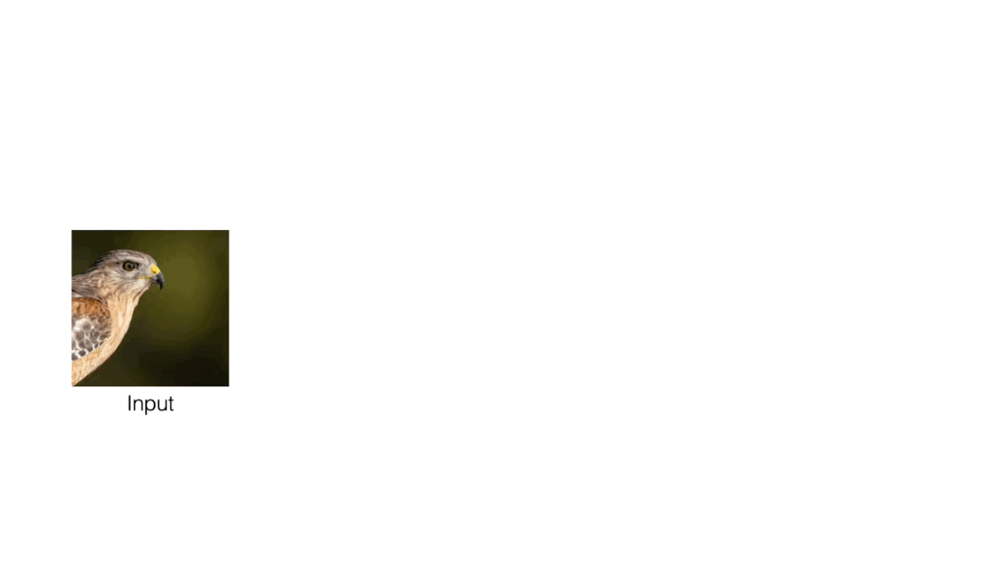
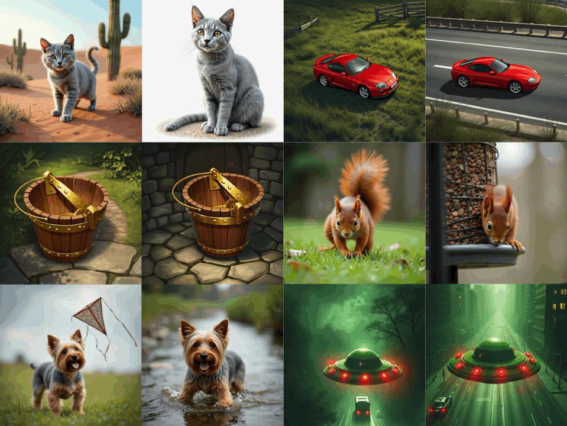
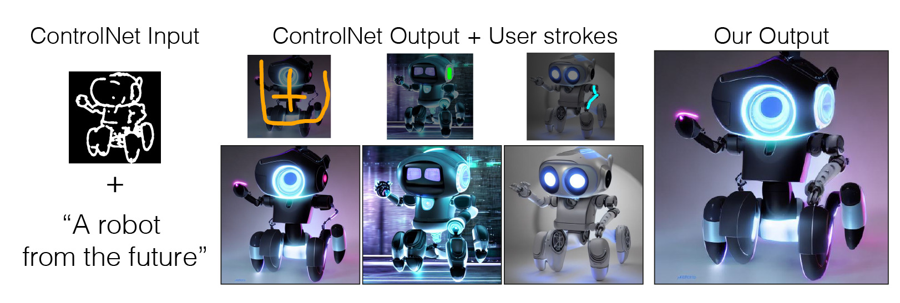
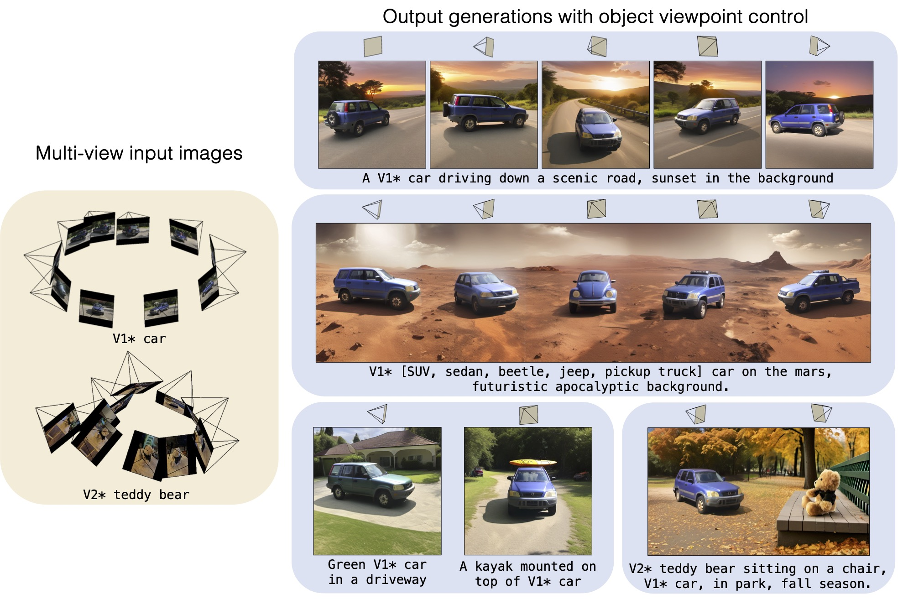
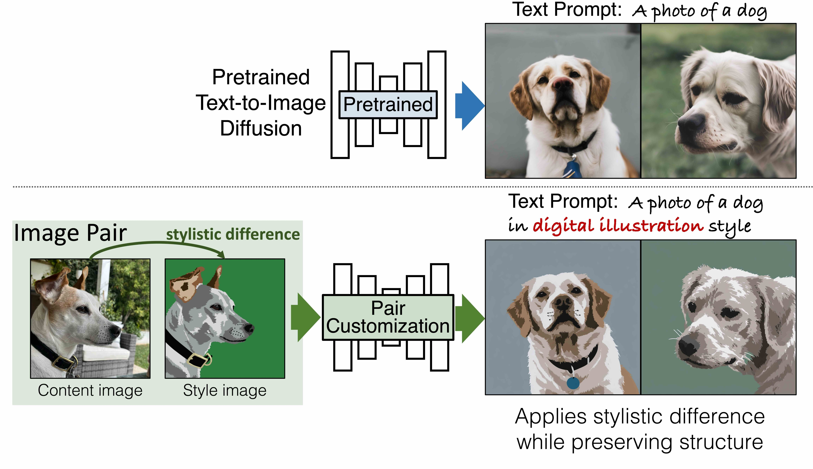
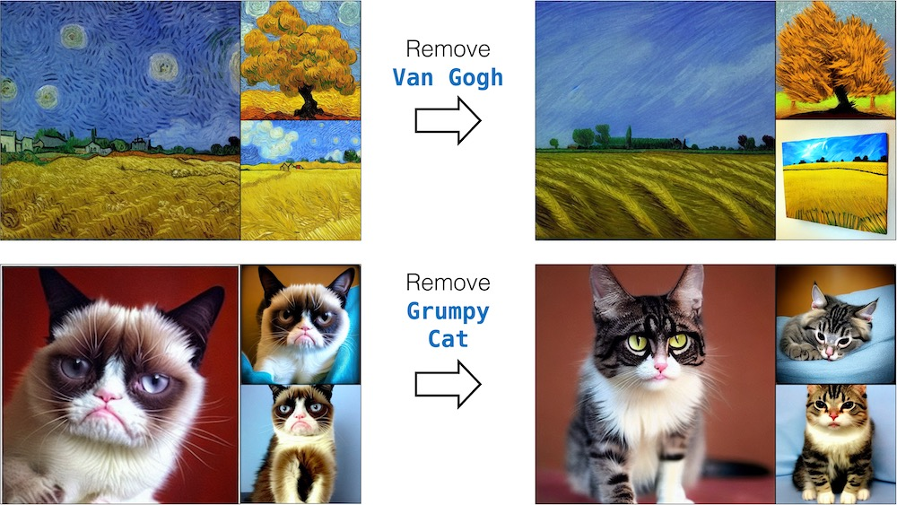
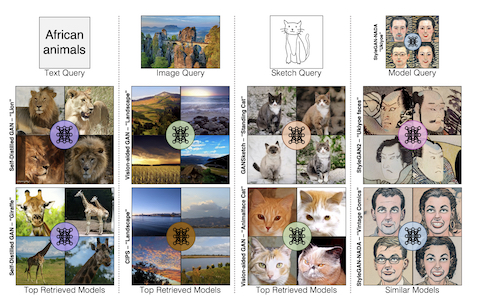
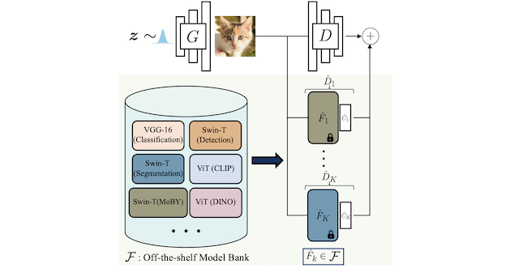
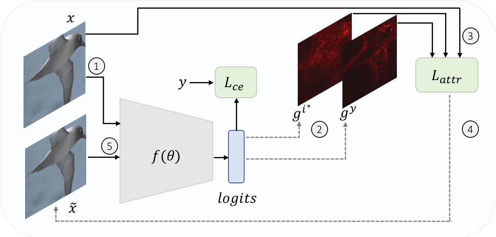

|
I am a final year PhD student at Robotics Institute, Carnegie Mellon University (CMU). I am advised by Jun-Yan Zhu and collaborate closely with
Richard Zhang and Eli Shechtman. My research interests lie in computer vision, specifically, generative models, model customization, and post-training techniques.
Email / LinkedIn / Resume / Google Scholar |
 |
|
|
|
|
|  |
We propose NP-Edit (No-Pair Edit), a framework for training image editing models using gradient feedback from a Vision–Language Model (VLM), requiring no paired supervision. Our formulation combines VLM feedback with distribution matching loss to learn a few-step image editing model. We show that performance improves directly with more powerful VLMs and larger datasets, demonstrating its strong potential and scalability.
[Paper] [Webpage] |
|  |
We propose a data generation pipeline for image customization consisting of multiple images of the same object in different contexts. Given the training data, we train a new encoder-based model for the task, which can successfully generate new compositions of a reference object using text prompts.
[Paper] [Webpage] [Code] |
|  |
We propose a framework for creating the desired image by compositing it from various parts of generated images, in essence forming a Generative Photomontage.
[Paper] [Webpage] [Code] |
|  |
We propose Custom Diffusion-360, to add object viewpoint control when personalizing text-to-image diffusion models, e.g. Stable Diffusion-XL, given multi-view images of the new object.
[Paper] [Webpage] [Code] |
|  |
We propose PairCustomization, a method to learn new style concepts from a single image pair by decomposing style and content.
[Paper] [Webpage] [Code] |

|
We propose Custom Diffusion, a method to fine-tune large-scale text-to-image diffusion models, e.g. Stable Diffusion, given few
(~4-20) user-provided images of a new concept.
Our method is computationally efficient (~6 minutes on 2 A100 GPUs) and has low storage requirements for
each additional concept model (75MB) apart from the pretrained model.
[Paper] [Webpage] [Code] |
|  |
We propose a method to ablate (remove) copyrighted materials and memorized images from pretrained
text-to-image generative models. Our algorithm changes the target concept distribution to an anchor
concept, e.g., Van Gogh painting to paintings or Grumpy cat to Cat.
[Paper] [Webpage] [Code] |
|  |
We propose an algorithm for searching over generative models using image,text, and sketch. Our search platform is available at Modelverse. SIGGRAPH Asia 2023.[Paper] [Webpage] [Code] |
|  |
We show that pretrained computer vision models can significantly improve performance when used in an
ensemble of discriminators.
Our method improves FID by 1.5x to 2x on cat, church, and horse categories of LSUN.
[Paper] [Webpage] [Code] |
|  |
We propose a robust attribution training methodology ART that maximizes the alignment between
the input and its attribution map.
ART achieves state-of-the-art performance in attributional robustness and weakly supervised
object localization on CUB dataset.
[Paper] [Webpage] [Code] |

|
Used self-supervision techniques - rotation and exemplar, followed by manifold mixup for few-shot
classification tasks.
The proposed approach beats the current state-of-the-art accuracy on mini-ImageNet, CUB and CIFAR-FS
datasets by 3-8%.
[Paper] [Code] |
|
|